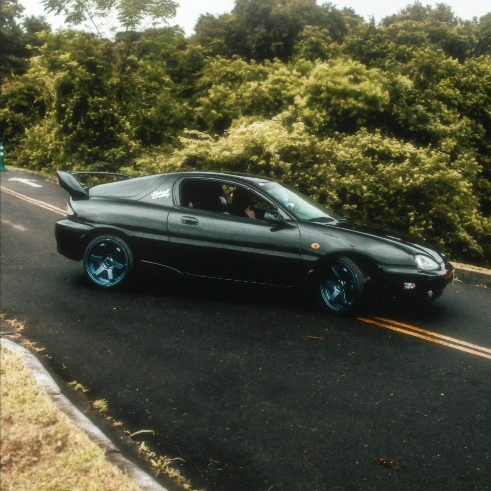
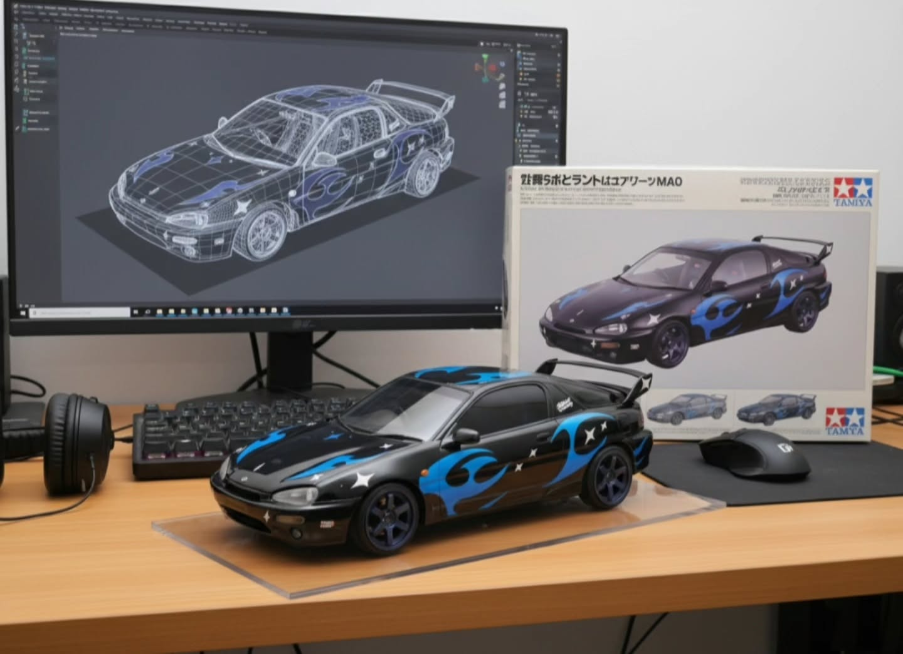

Lil Titch
Criadora de conteúdo automotivo e lifestyle em Curitiba.
Transformando paixão por motores em conexões reais.
Trabalhe Comigo



Alem do Asfalto
Apaixonada pela cultura automotiva e lifestyle, transformo minha rotina em conteúdo que conecta. Com base em Curitiba, compartilho a jornada a bordo do meu Mazda e a presença nos principais eventos do cenário nacional.
Com uma comunidade engajada de mais de 30 mil seguidores, meu objetivo é elevar a estética automotiva e mostrar que o estilo de vida une performance e conexões reais.